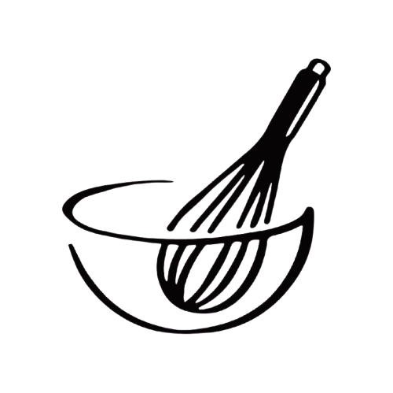

Holidays & Hosting
Chocolate Crinkle Cookies
A festive cookie perfect for holiday gift boxes.
View Recipe

Hi, I’m Mariah, Welcome to Baking Through Life, a recipe website designed to help people find the perfect bake for any moment life brings. Throughout my life, I have often struggled with deciding what to bake for different situations—whether it was meeting my partner’s parents for the first time, celebrating major milestones, or finding ways to connect with others. This website is a guide I have created based on my own experiences, helping make those moments feel simpler and more meaningful through baking.
Holidays & Hosting
A festive cookie perfect for holiday gift boxes.
View Recipe
College Life
The perfect late-night study snack.
View Recipe
Cozy Day
Warm, fluffy, and packed with cinnamon.
View Recipe